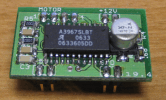
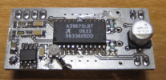
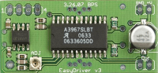
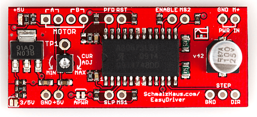
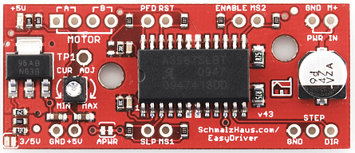

-- all text and all designs are from Brian Schmalz's Project page.
Bruce Shapiro got me to design and build the UBW (USB Bit Whacker) project to solve his problem of disappearing parallel ports on computers. The UBW design has exceeded all of my expectations. As well as meeting the original design objectives, it has proven itself a great platform for many forms of firmware. But there was still a problem! Bruce traditionally used the UCN5804B stepper motor driver chip for his EggBot classes because it is easily breadboardable and very simple to use. Unfortunately, they are now $17 each and very difficult to find. Bruce wondered if I could design and build a replacement driver that would still be mountable on a breadboard, would still just need two input lines (step and direction) and would drive bi-polar stepper motors. And so now we have the EasyDriver design.
Model: MOT101D1P
http://www.seeedstudio.com/depot/images/product/ezd1n.jpg
The warnings and wrong operations possible cause dangerous.
It is the schematic, the circuit about Eagle resource like .pdf should linked here in order to avoid memory exhausted.
May include key specification and other specifications.
| Item | Minimum | Typical | Maximum |
|---|---|---|---|
| Operate voltage | 3.0V | 3.3V | 3.6V |
| Communication Protocol | I2C and SPI | ||
Status:
NOTE: Many people attempt this setup without connecting the grounds of the power supply, EasyDriver and Arduino (or other pulse source) together. It tends to not work that way! So make sure you always connect the grounds, and you'll have much better luck.
| EasyDriver Hardware Versions Matrix | |||||
| Schematic | Board | Picture | Guide | Eagle Files and BOM | |
| EasyDriver V1 | N.A. | N.A. | Here | N.A. | N.A. |
| EasyDriver V2 | N.A. | N.A. | Here | N.A. | N.A. |
| EasyDriver V3 | Here | Here | Here | Here | Here |
| EasyDriver V42 | Here | Here | Here | Here | Here |
| EasyDriver V43 | Here | Here | Here | Here | Here |
| EasyDriver V44 | Here | Here | N.A. | N.A. | Here |
Includes important code snippet. Demo code like :
Demo code { }
The projects and application examples.
All the components used to produce the product.
Q) How do I adjust the current limit?
A) Just turn R16 - the 10K current limit pot. At one limit, it will tell the driver chip to supply up to 750mA (limited by coil resistance and input voltage) per coil. At the other limit, it is 150mA/coil. More recent EasyDriver boards have silk screen words MIN and MAX, but I put them on backwards. Version v4.4 and above have the MIN/MAX labels correct.
Q) What kind of stepper motors can I use EasyDriver with?
A) The Allegro 3967 driver chip that the EasyDriver is based off of is a bi-polar driver. This means it has a true H-bridge design internally, and sends current both ways through each of the two coils. You can use 4-wire, 6-wire or 8-wire stepper motors. The only kind you can't use is 5-wire stepper motors. (They need uni-polar drivers.)
Here's a little drawing on one way to hook up a six wire stepper motor to the EasyDriver.
Q) Why does EasyDriver get so hot?
A) PWM current limiting drivers (so-called 'chopper' drivers) are turning the coil currents on and off very rapidly. This makes sure that the maximum amount of current (as set by R16, the current set pot) is _always_ flowing through the coils of the stepper motor, even if it is not moving at all. That's just how these things work. It means that the driver is constantly passing that much current through, and because its internal resistance is not zero, it dissipates some heat. If you turn R16 all the way up so that 750mA flows through each coil, the entire EasyDriver board will get hot to the touch. I've never burned my finger on it, but it certainly gets hot. (At the minimum - about 150mA/coil - it only gets barely warm.) You can put a small fan blowing across the board if you want to. But fear not, the driver chip has a thermal cut out at 165 degrees C, so it will protect itself. The boards have quite a bit of copper pour on them, to maximize heat dissipation, which helps a lot. Also the voltage regulator gets quite hot - this is because the driver chip needs 70mA at 5V for its logic supply. Depending upon what voltage you use into the M+ pin, the voltage regulator needs to drop that down to 5V (and throw the rest away as heat). So the higher the M+ voltage, the hotter that regulator will get.
Q) What hardware/software can I use to test my EasyDriver?
A) Here's what I do. I solder headers in the pins of the EasyDriver and put it into a breadboard. I solder the wires on my stepper motor to a 4-pin .100" male header, and plug that into the breadboard so it connects properly to the EasyDriver. Then I take a PC power supply, and use the 12V from that into the GND and M+ pins on the EasyDriver. Then I tie the DIR pin to Ground with a wire. Then I take a square wave with a frequency of about 500Hz and put it into the STEP pin. This I generate with a signal generator or an Arduino or UBW. The motor should be spinning at this point. You can then take the DIR pin and connect it to +5V to see the motor go in the other direction. As the motor is running, you can slowly adjust the current adjust pot to see the effect that it has on the smoothness of the motor's motion.
Q) How do I connect my EasyDriver up?
A) (For Version 4.2) All of the pins on the EasyDriver are on a .100" grid. If you solder .100 headers into the pins you want to use, it plugs into a standard breadboard. Once you plug it into a breadboard, you can then plug in your stepper motor to the four motor pins (JP3), your 8V to 30V motor power to the GND and M+ PWR IN pins (JP1), and your Step and Direction signals to the STEP, DIR and GND pins (JP2). The GND pin in the lower left corner of the board is really only there for mechanical support, but it is tied to ground and you can use it as such.You could also construct a simple 'carrier' board (on a proto board or some such) with female .100" headers for all for the EasyDriver pins. Then it would be easy to wire up as many EasyDrivers as you wanted to drive lots of stepper motors.
A) (For Version 3) All nine of the pins on the EasyDriver are on a .100" grid. This means it plugs into a standard breadboard. Once you plug it into a breadboard, you can then plug in your stepper motor to the four motor pins (JP4), your 5V to 30V motor power to the GND and V+ pins (JP1), and your Step and Direction signals to the STP and DIR pins (J3). The GND pin in the lower left corner of the board is really only there for mechanical support, but it is tied to ground and you can use it as such.You could also construct a simple 'carrier' board (on a proto board or some such) with female .100" headers for all for the EasyDriver pins. Then it would be easy to wire up as many EasyDrivers as you wanted to drive lots of stepper motors.
Note that I made a couple of mistakes with the EasyDriver V3 silk screen. The STEP pin is not labeled, and the motor coil output pins are not clearly marked. This diagram should help clear up any problems:
Q) Man, this is a lot of work to just use the A3967 chip. Can't I just solder down a bunch of A3967s on my own board design and save a ton of money?
A) Sure. <grin> The EasyDriver board is for people who want to spend a little bit of money and not have to worry about making their own board to hold the driver chip. It is for people who want a design that will 'just work' instead of having to try stuff out for themselves. It is for 'software folk' (like myself) who want to spend time writing code, not debugging hardware. It is for people who want to build an EggBot but can't get the 5804B chips. If you're designing your own board, then don't use an EasyDriver! Just put the chip down on your own board yourself.
If you have questions or other better design ideas, you can go to our forum or wish to discuss.
| Image | Revision | Descriptions | Release |
|---|---|---|---|
|  | EasyDriver V1 | This was the first attempt. I had two boards fabbed at BatchPCB (Very highly recommended). The design worked fine but because the board was so small it got _way_ too hot. Also did not have variable current limit or 5V regulator. | Jun 08, 2009 |
|  | EasyDriver V2 | This was the second attempt. I had some boards fabbed at Futurlec without solder mask or silkscreen. The board was twice the size of V1, and routed to dissipate heat much better. The 5V regulator was added. I have since modded the completed boards to add the variable current limit. | |
|  | EasyDriver V3 | A refined version of V2, with the variable current limit on the board, and switched to 0603 components. I have not had any of these boards fabbed yet, as I'm confident in the design from the V2 boards. - Update: SparkFun is now selling these, and they work fine. | |
|  | EasyDriver V4.2 | Same footprint (as far as the holes go), slightly longer board, with lots of new features. Here are the difference from V3:
|
|
|  | EasyDriver V4.3 | Exactly the same as V4.2 except two mounting holes have been added based on user requests. | |
| EasyDriver V4.4 | Exactly the same as V4.3 except the MIN/MAX silk screen error has been fixed | Jan 25, 2011 |
Bug Tracker is the place you can publish any bugs you think you might have found during use. Please write down what you have to say, your answers will help us improve our products.
The Additional Idea is the place to write your project ideas about this product, or other usages you've found. Or you can write them on Projects page.
Click here to buy:http://www.seeedstudio.com/depot/easydriver-stepper-motor-driver-v3-assembled-p-219.html?cPath=170_173.
This documentation is licensed under the Creative Commons Attribution-ShareAlike License 3.0 Source code and libraries are licensed under GPL/LGPL, see source code files for details.
Links to external webpages which provide more application ideas, documents/datasheet or software libraries
Copyright (c) 2008-2016 Seeed Development Limited (www.seeedstudio.com / www.seeed.cc){kind=link}
{kind=link}
{kind=link}
{kind=link}
{kind=link}
{kind=link}
{kind=link}
{kind=link}
{kind=link}